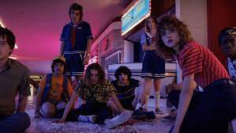
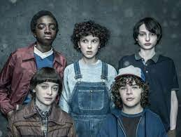
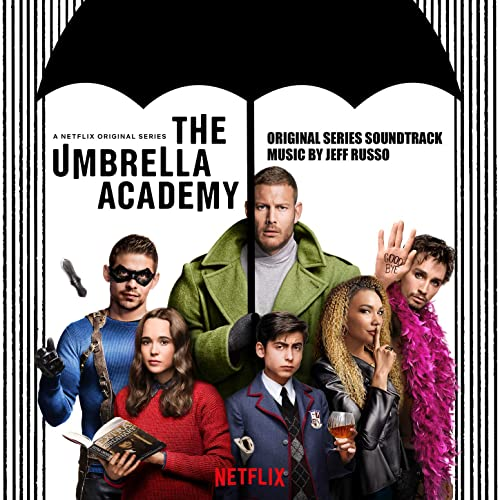
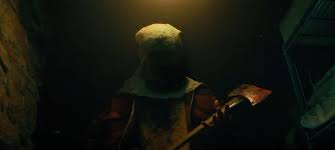
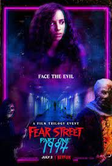

список фильмов
-
очень страные дела


- очень много спец эфектов
- интересный и глубокий сюжет
- отличный каст актёров
-
академия амбрелла

- захватываюшее начало
- хорошый монтаж
- aктеры играю очень хорошо свою роль и некоторые в нее вжываются
-
улица страха


- для типа фильмов хоррор и ужастиk очень правдоподобно
- все понятно как,что,где происходит даже если просто зайдешь в фильме номер 2
- очень захватываюший сюжет и можно полность войти в роль как буд то ты тоже учасвуешь в этом фильме